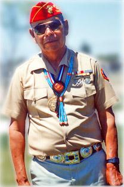

|

|
Mr. Joe Morris, Sr. is a full-blooded Navajo who was one of the
Navajo Code Talkers, a program established by the Marine Corps in
September 1942 to prevent interception of messages among units in the
Pacific Campaign. He was born on April 19, 1926. He was raised on a
Navajo Reservation at Indian Wells, AZ. Lying about his age when he
was 17, he obtained a draft registration card. On April 20, 1944 he
joined the United States Marine Corps. After passing the physical and
written tests in Phoenix, AZ, he was sent by troop train for training
in San Diego, CA.
Mr. Morris completed his eight week Basic Training at San Diego
Marine Recruit Depot. After graduation, he was assigned to the Navajo
Communications School at Camp Pendlenton, Ca. The school lasted for
five months and covered intensive Navajo language code communication
skills and terms for the various types of military hardware and key
military officials. This was especially difficult since Navajo is a
spoken language with no reference to any modern concepts or
properties. After completion of communications school, he was sent to
the Pacific on December 15, 1944 for assignment in the Marine Combat
Division. He was assigned to the 22nd Marine Regiment, 6th Marine
Division. He was on Guadalcanal, Guam, Saipan, Okinawa, and Tinstao
China. His awards include combat ribbons, Asiatic Pacific Theatre,
and China Occupation medals. He also held the Rifle Expert Medal. He
obtained the rank of Corporal prior to his discharge on August 20,
1946. He has received a Certificate of Appreciation from the
President of the United States for his duties as a Navajo Code Talker
as well as a Certificate of Recognition from the State of California
Senate.
He is married to his wife, Charloette, and has three children; Joe
Jr., Colleen, and Elliott. He also has three grandchildren.
|